🚗 Arrival
Welcome! Here are a few things to help you get settled in quickly and start enjoying your stay.
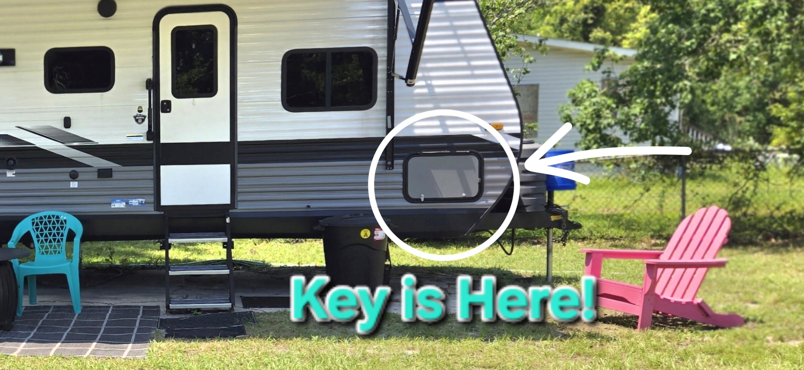
🔑 Finding Your Key
Your key is located inside the exterior storage compartment shown above.
Please return the key to the same compartment before checkout so it's ready for the next guest.
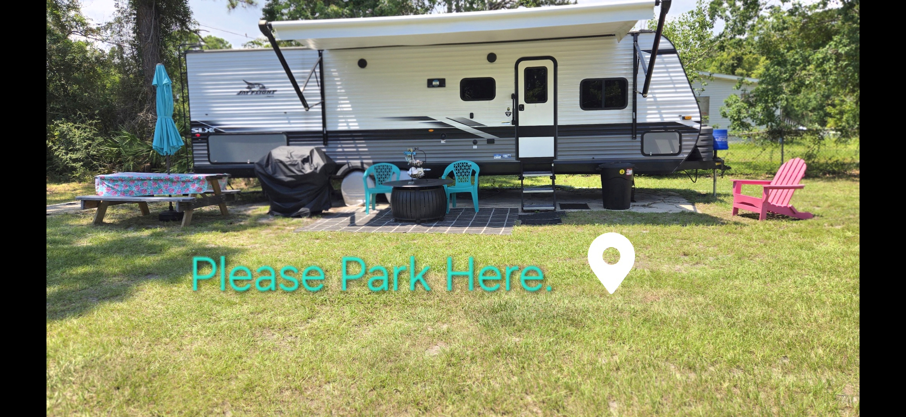
🚗 Parking
Please park in the designated camper parking area. If you have multiple vehicles, please avoid blocking access to the driveway.
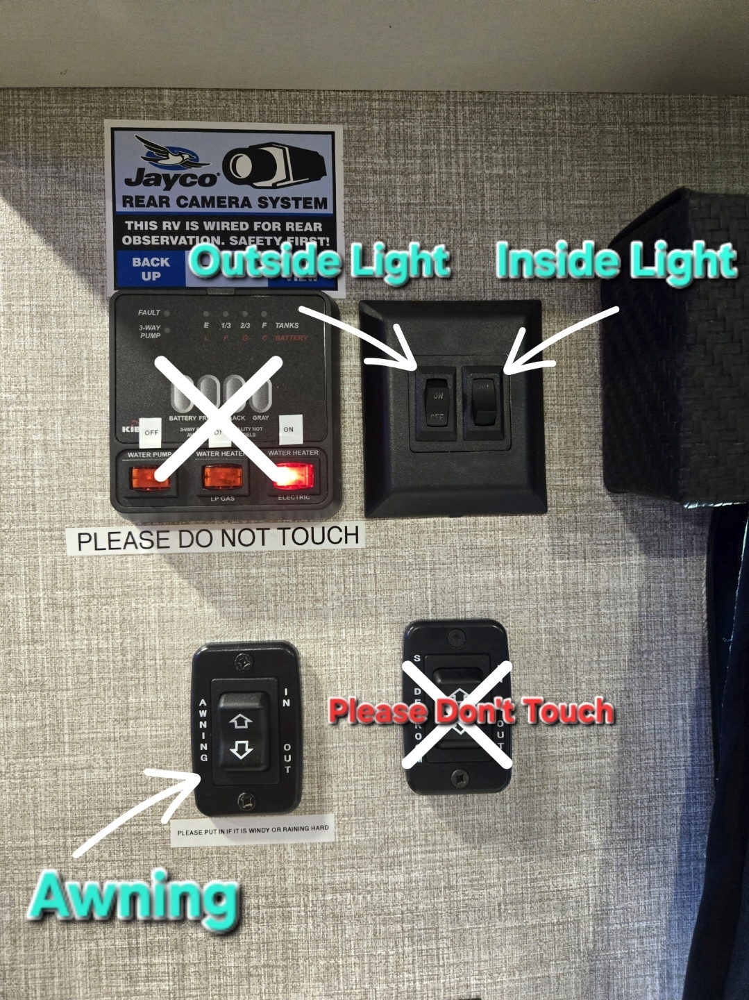
💡 Main Light Panel
Located just inside the entrance, this panel controls the camper's interior and exterior lights.
You'll also find the awning controls here. Please leave the other camper controls as they are unless instructed otherwise.
🛟 Safety Information
For everyone's safety, please take a moment to locate the camper's two emergency exit windows:
- Bottom bunk window
- Master bedroom rear window
Smoke and carbon monoxide detectors are installed throughout the camper. In an emergency, call 911 first, then contact me when it's safe to do so.
Inside Your Camper
Take a quick tour of your home away from home. Here are the locations of some commonly used items and amenities.
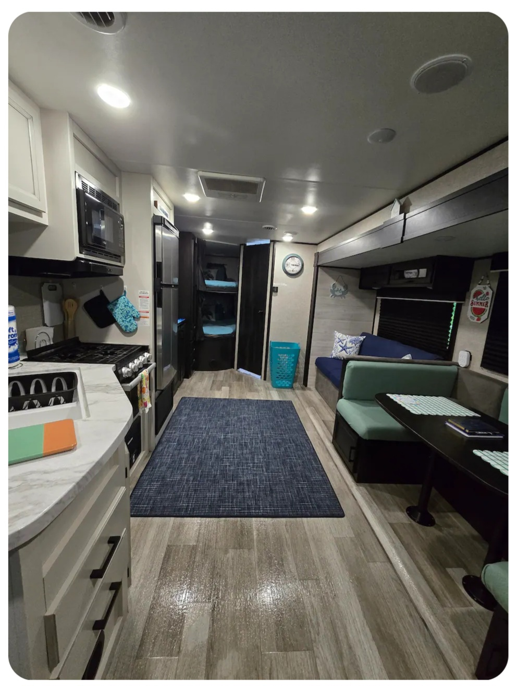
Living Area
The main seating area is perfect for relaxing, watching TV, or enjoying meals together. Extra blankets and pillows can also be found throughout the camper.
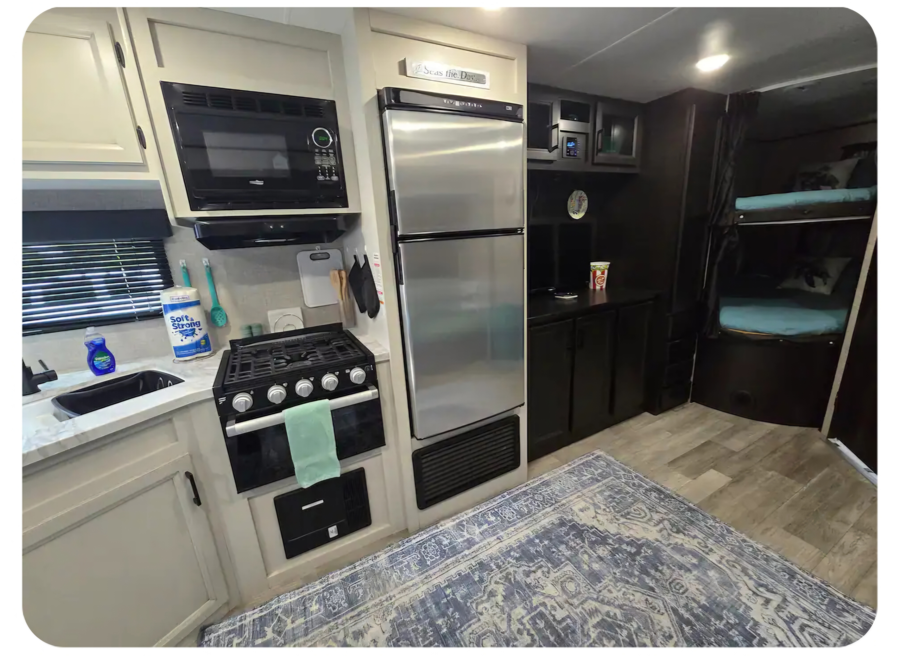
Kitchen
The kitchen includes a refrigerator, microwave, stove, oven, sink, coffee maker, cookware, dishes, utensils, and basic cooking essentials.
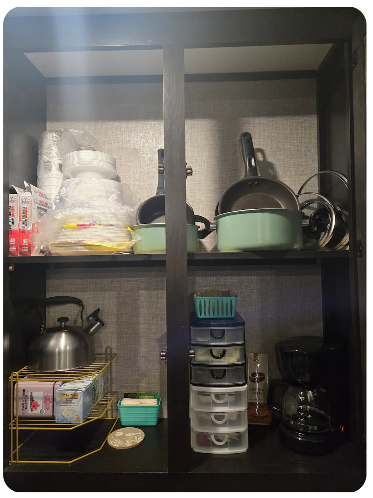
Cookware & Complimentary Coffee/Tea Station
Pots, pans, tea, and coffee essentials are located here in the cabinet near the bookshelf. Plates, cups, mugs, silverware, and cooking utensils are organized inside the kitchen cabinets above the sink and in the drawers.
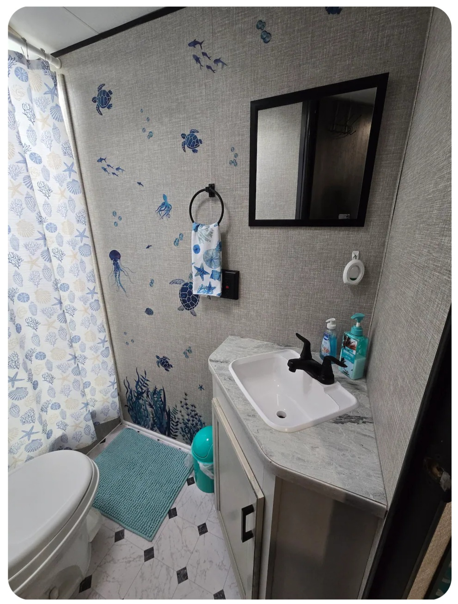
Bathroom
The bathroom includes a shower, sink, toilet, and several complimentary essentials to make your stay more comfortable.
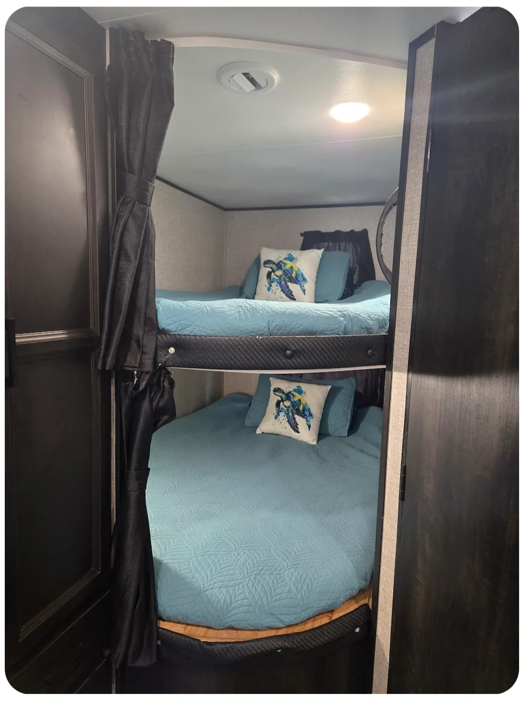
Bunk Beds
The rear bunk room provides comfortable sleeping space and privacy for additional guests.
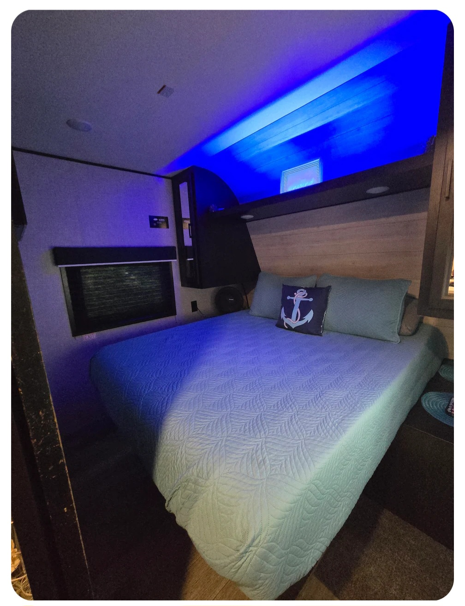
Main Bedroom
The queen bedroom features comfortable bedding, reading lights, storage space, and a closing door for privacy.
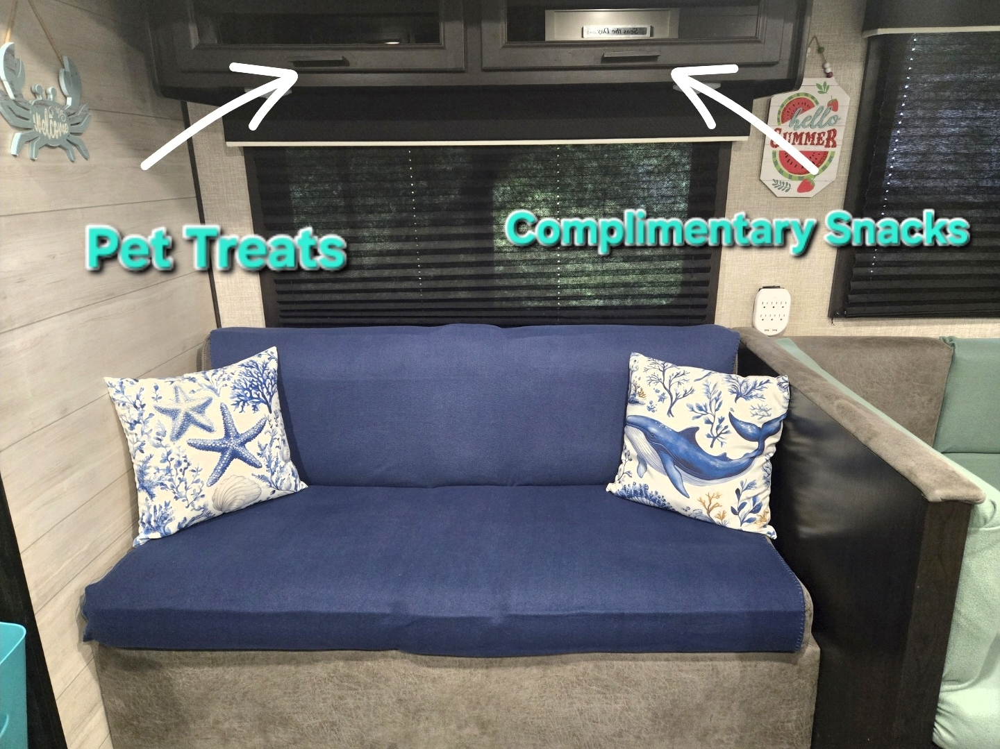
Complimentary Snacks
Help yourself to the complimentary snacks and pet treats prepared for your stay. Please note that the pet treats are reserved for guests who have paid the pet fee.
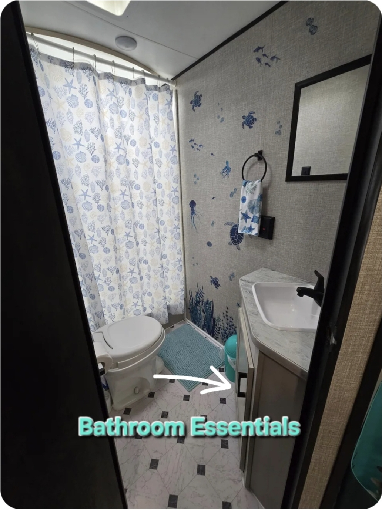
Bathroom Essentials
Forgot something? We've stocked a few commonly needed toiletries and essentials for your convenience.
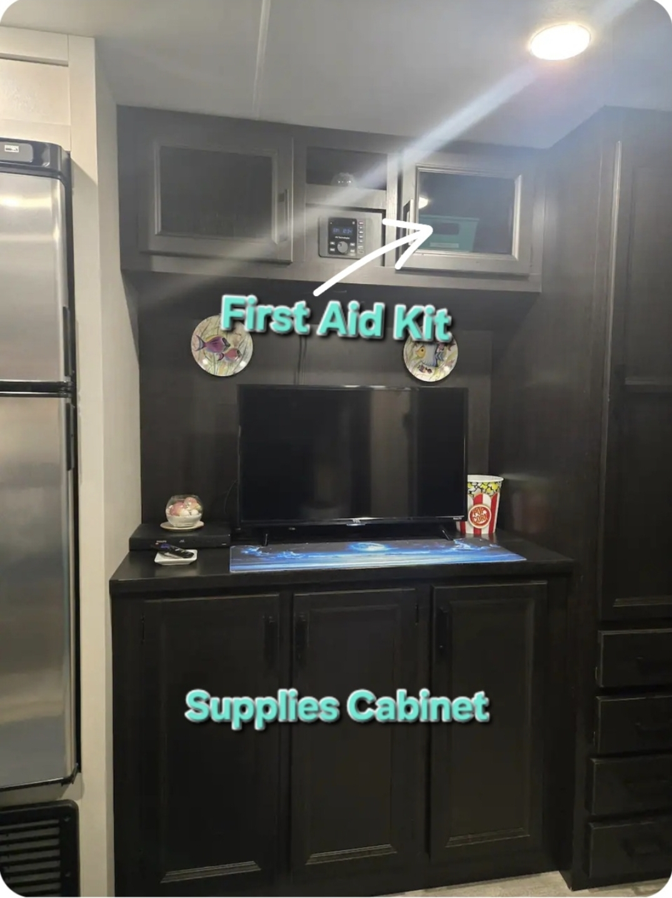
First Aid Kit/Supplies
A basic first aid kit is available should you need it during your stay. In the bottom cabinets there are towels, washcloths, extra sheets/blankets, and also some board games.
Your Home Away From Home
We hope you enjoy your stay and make wonderful memories during your visit to the Emerald Coast!
📋 House Guidelines
Thank you for choosing our camper! These simple guidelines help keep the camper clean, comfortable, and enjoyable for everyone. We truly appreciate your cooperation and hope you have a wonderful stay!
Registered Guests
For the safety and security of everyone on the property, all overnight guests must be included on your Airbnb reservation.
Pets Welcome
We love welcoming furry family members! Please clean up after your pets and never leave them unattended inside the camper for extended periods.
Enjoy the Front Yard
Please feel free to enjoy the front yard, picnic table, and outdoor seating areas. The backyard is reserved for the property's resident, so we kindly ask that guests stay within the designated Airbnb areas.
Septic System
The camper uses a small RV septic system that is more sensitive than a household system. Please flush only the toilet paper provided in the bathroom. Do not flush wipes, feminine products, paper towels, or any other items.
If you need additional toilet paper during your stay, just let us know—we're always happy to provide more.
Air Conditioning
To help keep the camper cool and comfortable, please keep the entry door, all windows, and the bathroom roof vent closed whenever the air conditioner is running. Even a partially open door, window, or vent can let cool air escape and make it much harder to keep the camper comfortable during hot Florida days.
Food & Drinks
Please enjoy meals and snacks in the kitchen, dining area, or living room. To help keep the mattresses clean and comfortable for future guests, we ask that food and drinks stay out of the bunk beds.
Need Anything?
If you have questions or need assistance at any time, please contact us through Airbnb or by phone—we're always happy to help!
The home on the property is occupied by an elderly family member who is not involved with the Airbnb. To respect her privacy, please do not knock on her door or disturb her during your stay.
Smoking Policy
Smoking of cigarettes and marijuana is permitted outdoors only. Please dispose of cigarette butts responsibly.
Smoking inside the camper will result in an additional cleaning fee, as smoke odors are very difficult to remove—especially when another guest is checking in the same day.
❤️ A Little Love Goes a Long Way
Campers are a little more delicate than traditional homes, and many replacement parts must be specially ordered. We simply ask that you treat the camper with the same care and respect you would your own home.
Accidents happen—we completely understand! If something is accidentally damaged during your stay, please let us know as soon as possible. Prompt communication allows us to repair or replace items before the next guest arrives.
Damage beyond normal wear and tear may result in repair or replacement charges through Airbnb, but our goal is always to work with guests fairly and respectfully.
💡 Tips & Tricks
A few helpful camper tips that answer some of the most common questions and make your stay even more comfortable.
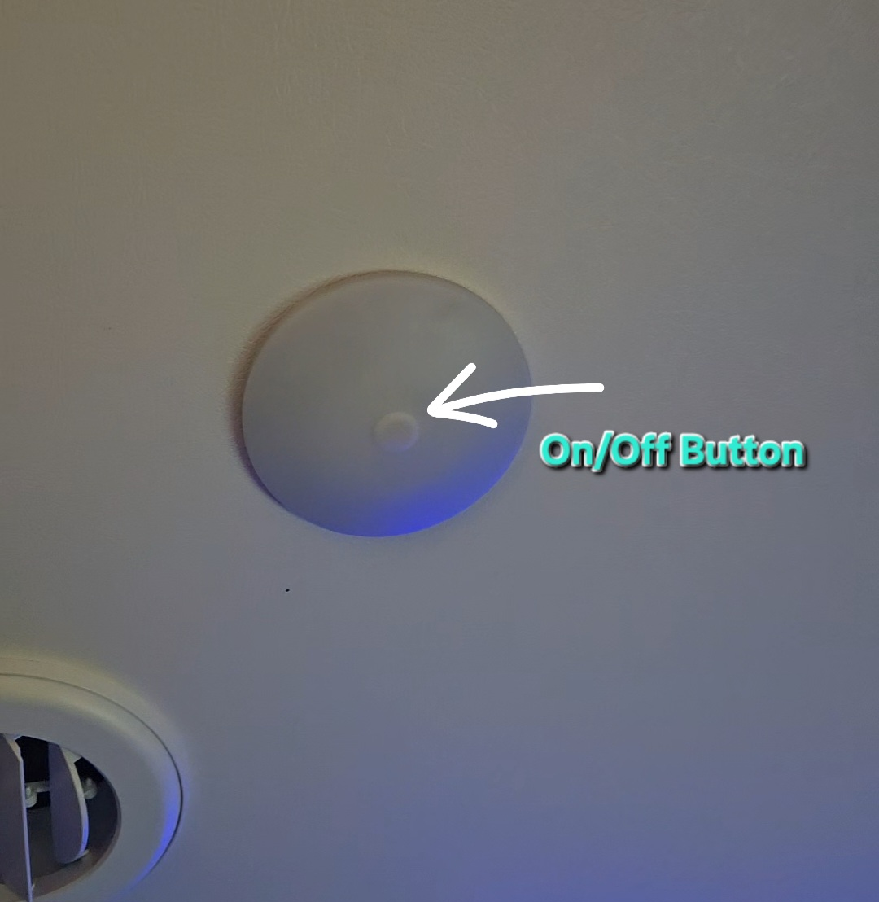
💡 Bedroom Lights
The bedroom wall switch only controls the blue LED accent light above the bed.
The ceiling lights are push lights. Simply press the center of each light to turn it on or off.
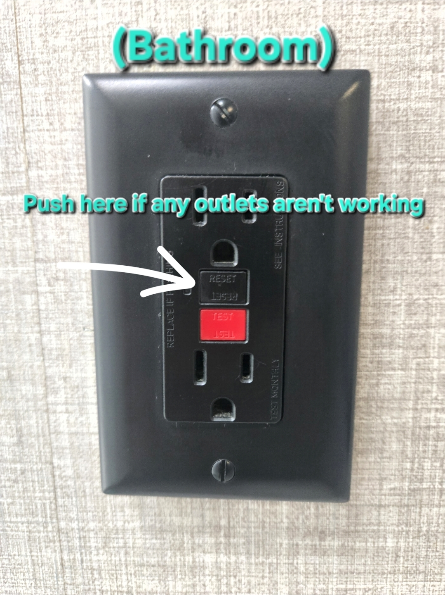
⚡ Resetting the Outlets
If several electrical outlets suddenly stop working, don't worry—it usually isn't a power outage.
Simply press the RESET button on the bathroom outlet shown above. This normally restores power to the other outlets throughout the camper.
❄️ Keeping the Camper Cool
RV air conditioners work a little differently than those in most homes. During hot Florida days, these simple habits make a big difference:
- Keep the entry door closed whenever possible.
- Keep all windows closed while the air conditioner is running.
- Keep the bathroom roof vent closed while the air conditioner is running.
Even leaving a door, window, or roof vent open for just a minute allows cool air to escape and warm, humid air to enter, making it much harder for the camper to stay comfortable.
🌙 For a Better Night's Sleep
Before going to bed, close the large ceiling A/C vent in the main living area.
- 😴 Makes the air conditioner noticeably quieter.
- ❄️ Redirects more cool air to the bedroom and bunk area.
- 🌡️ Helps the sleeping areas cool down faster and stay more comfortable.
If you'd like more airflow in the living room during the day, simply reopen the large ceiling vent.
🚐 Living in Your Camper
A few helpful tips about everyday camper living to help make your stay as comfortable and stress-free as possible.
🚽 Toilet & Septic System
The camper uses a small RV septic system, which is much more sensitive than a household plumbing system.
- Flush only the toilet paper provided in the bathroom.
- Please do not flush wipes, feminine products, paper towels, or any other items.
- If you need additional toilet paper during your stay, just send me a message and I'll be happy to provide more.
Helpful Tip: Before using the toilet, press the foot pedal halfway to add a little water to the bowl. This helps reduce odors from the holding tank when you flush.
You'll also notice a roof vent with an exhaust fan in the bathroom. While it's great for removing humidity after a shower, it's best to turn the fan off while flushing, as it can pull odors up from the holding tank.
💧 Water
The camper is connected to city water, so you can use the sinks, shower, and toilet normally.
If you happen to lose water or notice unusually low water pressure, please send me a message as soon as possible so I can get it taken care of.
🗑️ Trash
The black trash can is located outside near the front of the camper, beside the compartment where you picked up the key.
You may also use the large green trash can near the house (or near the road if it's been moved out for trash pickup).
🧹 Cleaning Supplies
A basket of cleaning supplies, including sprays, disinfectants, a broom, and a vacuum, is stored in the rear exterior storage compartment.
Please feel free to use anything you need during your stay. For safety, please keep all cleaning products out of reach of children.
🛏️ Extra Sleeping Space
Need a little more room? Both the couch and the dinette can easily be converted into beds.
Couch Bed
- Lift the front edge of the couch.
- Pull the couch outward.
- Lay it flat.
Flat sheets and extra blankets are stored in the cabinet beneath the TV.
Dinette Bed
- Remove the seat cushions.
- Lift the table straight up.
- Remove the support poles.
- Place the tabletop onto the black support ledges.
- Replace the cushions to create the mattress.
If you have any trouble converting either bed, just send me a message—I'm always happy to help.
🧳 Storage
To help keep the camper open and uncluttered, larger suitcases fit nicely:
- Under the couch
- Under the lower bunk
🍳 Kitchen & Cooking
The kitchen is fully stocked with cookware, dishes, utensils, and most of the essentials you'll need during your stay.
🔥 Using the Oven
RV ovens work a little differently than household ovens and can be a bit tricky the first time you use one.
This short video does an excellent job explaining how to light and operate the oven:
If you have any questions or run into any trouble, don't hesitate to send me a message. I'm always happy to help!
🌴 Outdoor Living
Make yourself at home and enjoy everything the outdoor space has to offer! Here are a few things available for your use during your stay.
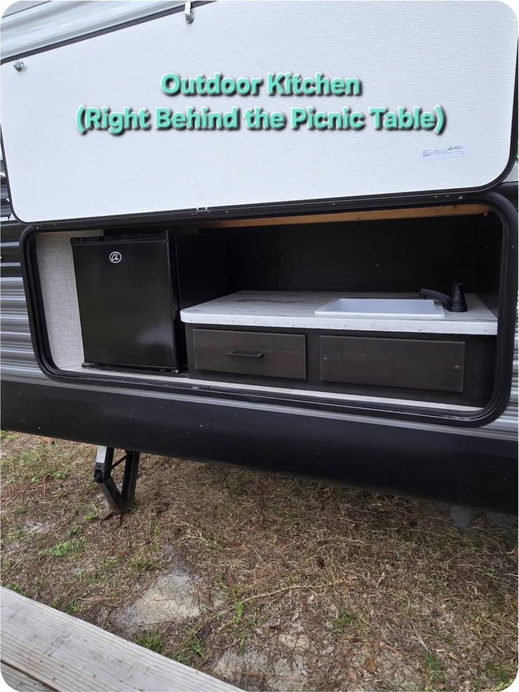
🍳 Outdoor Kitchen
The large compartment beside the picnic table contains the outdoor kitchen, complete with a mini refrigerator and sink. Feel free to use it during your stay!
🔥 Propane Grill
A propane grill is available for your enjoyment during your stay.
- The push-button igniter is currently not working. A long grill lighter is located in the silverware drawer inside the camper. You'll nee to turn on the burner and manually light it.
- A propane tank is attached to the grill for your convenience; however, the propane level is not guaranteed. If the tank is empty or runs out during your stay, guests are responsible for exchanging or refilling it if they wish to continue using the grill.
- Please do not disconnect or use the camper's propane supply for the grill. The camper's propane is reserved for the RV appliances.
- Please ensure the grill is completely turned off after each use and never leave it unattended while lit.
I'm unfortunately not much of a griller myself, so I may not be the best person for grilling tips or troubleshooting. If you're unfamiliar with propane grills, I recommend looking up a quick tutorial before using it.
🪑 Outdoor Amenities
Inside the large black outdoor storage container you'll find:
- Two folding chairs
- A small beach umbrella
- Basic beach toys
Please return everything to the storage box before checkout so it's ready for the next guests.
🐶 Pet Supplies
If you've added a pet to your reservation, you'll find pet supplies in the same compartment where you picked up the key, including:
- Pet pillow
- Blankets
- Food and water bowls
- Leashes
- Toys
- Waste bags
- Potty pads
Pet treats are also available in the cabinet above the couch.
To help us keep these supplies stocked for future guests, we kindly ask that only guests who have paid the pet fee use the pet food and treats. Thank you for understanding!
🌳 Enjoy the Yard
You're welcome to enjoy the front yard, picnic table, and outdoor seating areas during your stay.
The backyard is reserved for the property's resident, so we kindly ask that guests stay within the designated Airbnb areas.
🚗 Food Delivery
Ordering DoorDash, Uber Eats, or another delivery service?
Please let your driver know you're staying in the camper. Including this in your delivery instructions makes it much easier for them to find you.
📍 Local Favorites
Whether you're looking for fresh seafood, beautiful beaches, family attractions, or a great cup of coffee, I've put together a list of some of my favorite local spots to help you make the most of your visit.
My Airbnb Guidebook includes restaurants, beaches, shopping, attractions, and other places I recommend to guests visiting the Panama City area.
🌴 Explore My Favorite Local Spots
I hope you discover a few new favorites during your stay. Enjoy exploring the Emerald Coast!
👋 Before You Go
We hope you had a wonderful stay! Checkout is simple—we'd rather you spend your last morning relaxing than worrying about a long checklist.
✅ Easy Checkout
- 💡 Turn off all lights.
- ❄️ Set the thermostat to 82°F with the system set to Auto.
- 🚪 Leave the camper door unlocked.
- 🔑 Return the key to the exterior storage compartment where you found it.
That's it! We'll take care of the rest.
❤️ Thank You!
Thank you so much for choosing Cozy Coastal Camper for your stay. It truly means a lot that you chose our little home away from home.
If you enjoyed your visit, we'd be incredibly grateful if you left us a review on Airbnb. Your feedback helps future guests and allows us to continue providing the best experience possible.
Safe travels, and we hope to welcome you back again soon! 🌊🐚